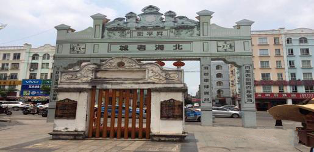

推荐景点
涠洲岛
岛屿宽阔，娱乐项目景点丰富，多样选择
📍#涠洲岛 最主要的特色是它的火山地貌，而且涠洲岛的日落也日出也很美，是你去涠洲岛不能错过的美景之一。涠洲岛的沙滩也适合带宝宝来玩耍哦 ❤关于涠路线： 涠洲岛很大，第一次来涠洲岛旅游的你可能会手足无措，为了让你省时省力游玩全程，亲测整理了这条路线， 🚗涠洲岛详细游览路线： →涠洲岛码头→贝壳沙滩→涠洲盛塘教堂五彩滩 →南湾海鲜市场→天后宫→鳄鱼山火山公园→ →火山口→鳄鱼山灯塔→石螺口海滩→涠洲岛暮崖
北海银滩
北海银滩看最美日落晚霞🌄
北海银滩🏖🏖#银滩公园 门票🎫：免费🆓的 最好在下午三四点去 因为那个时候就没有那么晒 到了六点多也可以看日落🌄 天气☁️非常好日落很明显 推荐大家来北海都可以去看一看银滩 金黄的余晖还洒在了我的脸上，我仿佛感受得到落日的温度，海风轻轻吹过，柔柔的，好像是不忍带走这份冬日的温暖。落日使我对银滩的感情变得深厚🌅🧡
北海老街
【老城记忆——北海老街】
北海老街是在1883年建立的，街道两边是中西合璧的骑楼式建筑，这条老街曾经分布着不同国家的领事馆，现在已经成了北海市的一条小吃街，一些北海市的特色小吃这里也可以吃到，包括：花螺、虾饼、猪脚粉等等。 🚲🚲🚲🚲【地址】 北海市海城区珠海路北海老城内 【交通】 🚌乘3路公交车在北部湾广场下车，往新力购物广场的方向顺着直走，步行约15分钟可到； 🚌乘坐2、13路公交车在海角路口下车。

北海之旅——冠头岭🌊🌊
🌊冠头岭海滩 传说中的海枯石烂
📍冠头岭的海滩 北海冠头岭果然是摄影宝藏基地，可以拍出N种风格。接近黄昏时分，拍完还能欣赏夕阳西下。 📝 宝藏拍摄地-北海冠头岭流下村 ☝🏻️首先来夸一下 新建不久的柏油路➕浅黄色的房子🏠与墙面，这个搭配真的看起来很舒服！视觉效果非常好！打开你的相机📷随便拍都hin好看！调点滤镜 分分钟日系风画面出现！✌🏻️开始运用路边的道具当背景（地标、指示牌、车辆限速牌、斑马线、花花草草🌿等）
侨港
侨港 | 海边拍照度假景点 侨港海滩
侨港风情街位于北海市南部的侨港镇 是北海最有名的美食街， 尤其到了晚上超级热闹。 这条街上汇集了点评上大多数的网红店 北海拍照必去地点之一，🌊就来这里吧，侨港海滩🏖 这里有很多拍照的选景，是个婚纱摄影基地，圣托里尼一样蓝白色的建筑，热气球屋🏠，摆设的小汽车🚕，假仙人掌🌵，小船📷，最重要是免费开放的！ 拍完后可以5分钟路程到必吃的侨港风情街，糖水 卷粉 生蚝 冰沙 蟹仔粉 卷粉 海鲜等等，尝尝当地美食。

美食分享
海鲜
北海美食推荐🥓
俗话说，靠山吃山，靠海吃海，北海作为中国的“四大渔场”之一， 面临的北部湾有丰富的 海洋资源，琳琅满目的海鲜是多少吃货旅行追求的深夜食堂！🤟🤟🤟 ❗️北海海鲜本地大排档推荐❗️ 银海区侨港镇：瘦佬大排档、老伙计大排档、银龙大饭店。 海城区和火车站附近：石头埠海鲜、源生食府（老街有分店）二哥佬大排档、八仔鸡饭店 海城区云南路和老街：外沙仔海鲜大排档、阿力大排档、街坊菜、外沙辉记海鲜大排档 海城区外沙岛：富龙城、疍家棚、海阳城（消费较高，提供包厢）沙虫王海鲜楼。
糖水铺
🐾侨港の美味糖水铺
📍北海美食探店🐾侨港の美味糖水铺
Feb. 五月 ｜ 24 星期日｜ 四月初一
📷 今日份の甜 ｜ 广式糖水
📍 北海·侨港 ｜ 24栋糖水店
24栋的糖水
偏甜不腻
是小时候常吃的味道
北海对于这块的保留是我常去的理由
南宁的传统糖水铺已失味或逐步消失
北海大大小小的糖水店不少
糖水不难煲 难的是怎么保留与发扬
24栋做到了

美容养颜生蚝
北海超新鲜烤生蚝店（海边街69号）夜夜鲜
新鲜，价格便宜！最主要是生蚝现开，现洗，现卖！没有隔夜的，所以才吃出那么鲜的味道。老板夫妇人也老实～所以我特别爱来这家店吃生蚝！生蚝价格：小15元一打，中20一打，大25一打（都是12个）有原味，蒜蓉。看个人喜好选择！（我超爱原味的，鲜！） 🉑以买海鲜来加工，收取加工费。看品种，按斤来算。 还有各种螺，烧烤🍢，小菜，炒粉。供你选择喔～ 来北海旅游的小伙伴们，想去尝鲜的集美们都可以去试试喔！保证你吃了赞不绝口！

Q弹猪脚粉
北海探店| 徐记猪脚粉
早上来一碗加料的粉是对北海粉文化的尊重🤩（其实是因为食量大） 徐记猪脚粉在北海算老牌猪脚粉了，也有其他很多好吃的猪脚粉店，比如五妹-车明-阿拾-2008 平常没有特别爱哪一家，都是哪里顺路去哪里吃😬不过个人偏爱徐记的猪脚，皮脆够入味.北海人吃猪脚是爱吃皮脆脆的猪脚皮，最靓的猪脚就是双骨😋 北海的粉了！北海人爱粉，爱各种粉，下一次带你们去吃北海海鲜粉！
虾饼
北海美食‖番薯巴和虾饼
🦐手工虾饼👉推荐：🧡🧡🧡🧡 通过油的高温炸的酥酥脆脆的 大只地角虾🦐附着在葱花面饼上 一口下去清脆超爽口，油香肆溢 🍠圆bobo的番薯巴👉推荐：🧡🧡🧡🧡 她家的番薯巴跟往常不一样，不是扁扁的那种 而是整颗脱皮小番薯通过面粉拼接在一起而成 在经过高温油炸至熟♨️♨️ 吃起来粉粉的真是大爱了💥🔥
旅游攻略
北海旅游攻略💜
第一次来北海💛必看的20个攻略💕|北海
1北海-老街：有着超过200年历史的骑楼老街，尽显老北海的芳华，附近巷子也值得一看，更有生活气息。2北海-银滩：十里银滩啊，中国数一数二的纯白沙滩能不去看看吗？注意潮汐变化，更能感受与众不同。3北海-喜来逢大酒店婚纱摄影基地👰：小圣托尼里的感觉，建议傍晚的时候去，落日+蓝白建筑，能刷爆朋友圈。4北海-冠头岭：海边不是沙子而是怪石滩，这里赶海拍照两不误。5涠洲岛🏊🏻：涠洲岛日落最美的欣赏地之一，一定注意安全哈,位于岛屿北边，人少海岸线长，建议退潮去，
北海美食推荐🧡
第一次来北海💛必看的攻略💕|北海
1五妹猪脚：北海吃到的最好吃的猪脚粉了，没有之一，不会特别油腻。 2蒋记食店：同样是一家被炒火了的海鲜🦀粉店，但是老板很知足。 3鲨鱼湾：北海又两家店，算是口碑比较好的海鲜店了，不宰客的良心店家，重点是味道也不错。 4.24栋糖水：任何时候路过都要排队，菜单上几乎没有不好吃的糖水，推荐芒果冰沙，五加，板栗🌰系列糖水。 5越侨世家：主要经营越南小吃，卷筒粉，虾饼，春卷等，都是按个售卖的，小店但是味道不错。
北海民宿推荐💚
第一次来北海💛必看的攻略💕|北海
📍北海海泰别墅群内:
民宿的装修是北欧ins风，简洁自然！房间的色调都是温馨，用了原木色的家具，主要色调是简单的白色。还有萌萌哒店宠阿布，从来没见过那么萌那么大只的小可爱。
涠洲岛：建议住在滴水丹屏村，交通什么的都很方便。

打卡拍照
网红打卡拍照🎈
北海0元拍照地方☁️治愈日系风☁️
去北海旅游，除了拍海 还能拍什么🤔⁉️
这个地方一定不能错过 真的好看到爆炸💥
不花一分钱也能拍美美的大片
都听我的给我去‼️‼️
拍出来妥妥的济州岛的感觉
广西也有那么美的地方 真的爱了
建议穿搭：韩风 或者日系甜美
地址：北海市冠岭路流下村往里走
打车🚖：流下 上车点
处处都是风景 随便拍
网红打卡拍照💜
北海旅游🌊隐藏了一个海边土耳其🎈0元拍！
🎈今天给大家分享一个北海的“海边土耳其”🇹🇷，这里真的太漂亮了！大家来北海可以来这个网红地方拍照啊~ 北海 🎈这里很多人来拍婚纱照，除了热气球，还有大风车，一些欧式建筑和教堂⛪️，还有那种复古的小轿车、车顶巴士拍照位等等~而且这里不用入住也可以免费！免费拍！啊啊啊！这里拍照也不是很多人，可以尽情拍~来北海旅游一定不能错过的拍照圣地！ 💡但是注意，千万不能在这里游泳喔~ - 🔹地点：北海市喜莱逢海景酒店 💡可以自行导航喔~

网红打卡拍照💚
北海0元拍照新去处｜超cool集装箱街头风系列
发现北海一个新的免费拍照点！集美们快去打卡💃 就在普度寺停车场旁后那片，几个集装箱搭建起来的景点，随便一拍就能出酷酷的街头风哦！ 拍完还可以去逛逛旁边冠头岭森林公园和冠头岭沙滩！一举多得！ 穿搭简约黑色系，因为本身集装箱色彩就很多啦，穿黑色系更好出片哦～ ☁️ 地址：北海市银滩区南万普度寺旁停车场后面（直接导航普渡寺可以到） 人均：免费！☁️